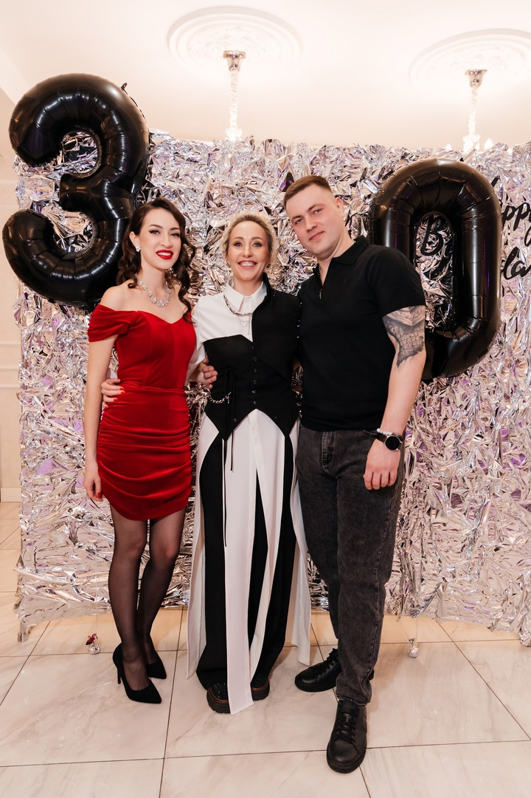
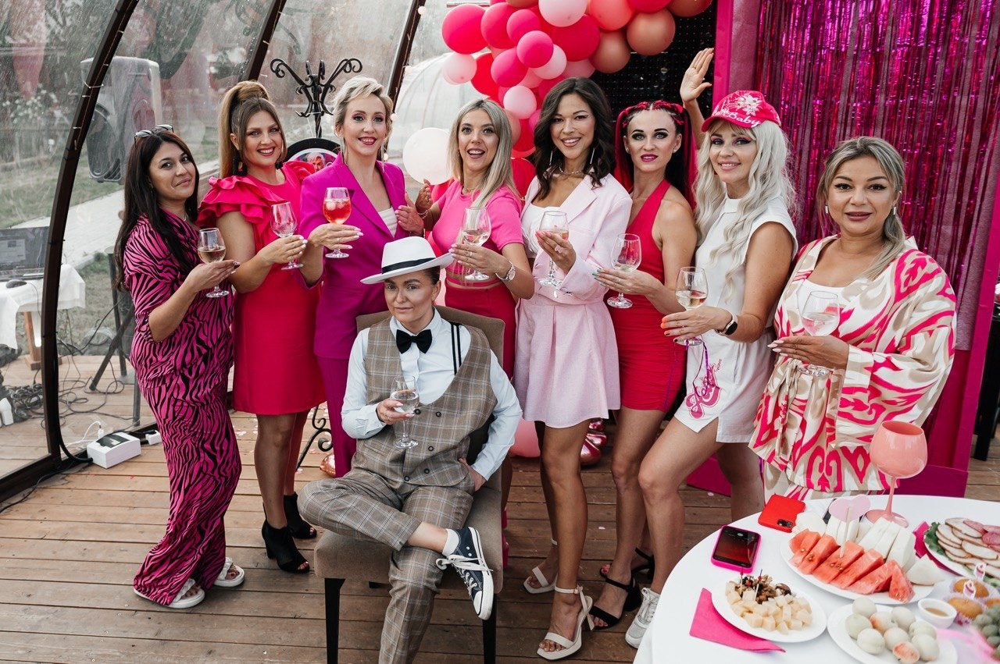
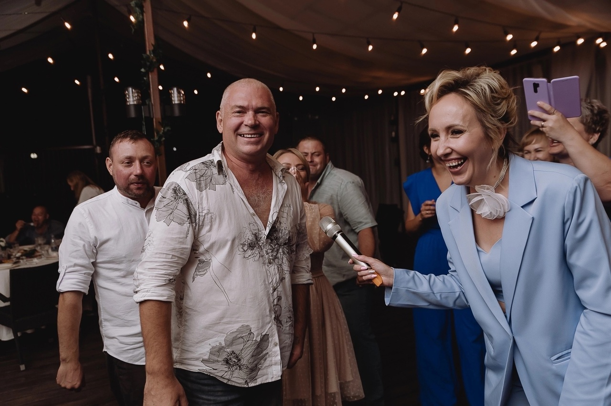
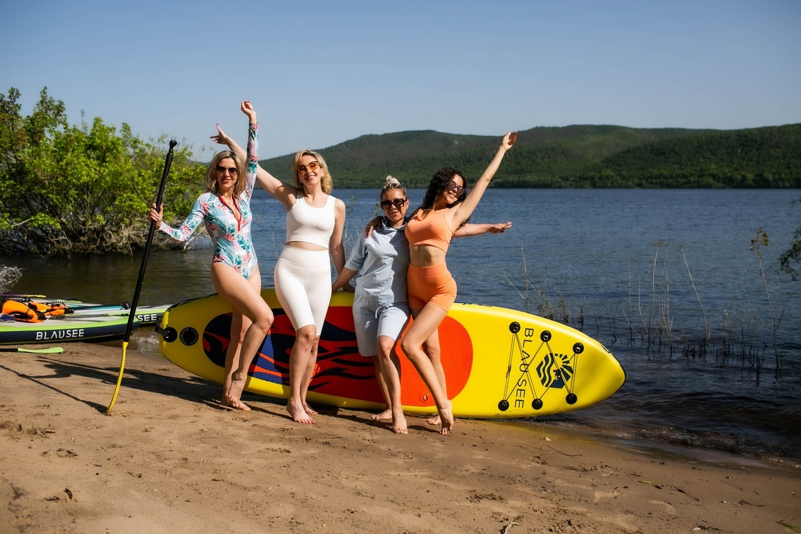
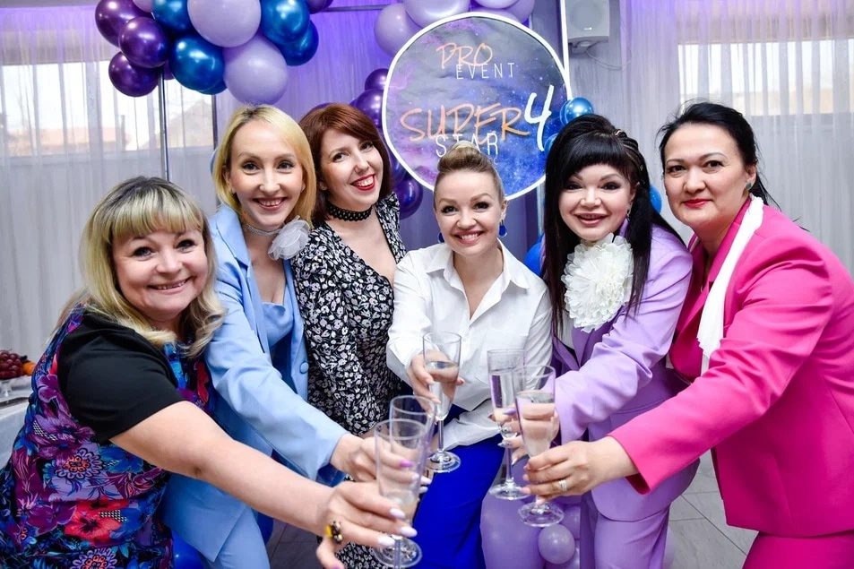
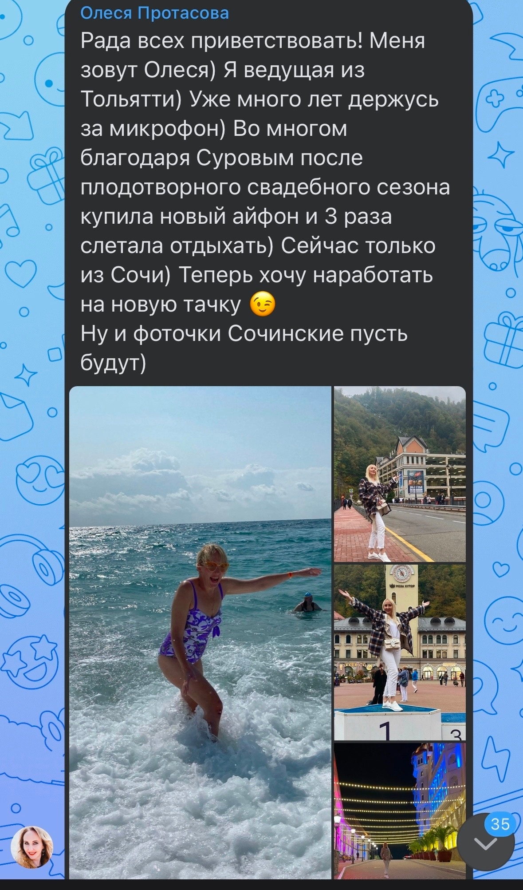

Ведущая из Тольятти увеличила свой доход в 3 раза, прокачав свои странички в VK.
Путешествует. Купила себе всякое, о чем давно мечтала.
Сколько тратит на рекламу? Как часто пишет посты? Сложно ли было научиться продвижению?
Это небольшое интервью с нашей ученицей Олесей Протасовой.
— Расскажи, что было до курса, какой средний доход был в месяц? Сколько клиентов?
— Средний доход в месяц был примерно 20-30 тр
Клиентов было 2-3 в месяц.

— Ты же с куратором работала? Расскажи, каково было работать с куратором, что было полезно, мотивировало ли это тебя? Как считаешь, без куратора получилось бы так же?
— Конечно, с куратором) Я б сама не справилась и не подняла свою ленивую жопку) А так, когда тебя постоянно подпинывают, работает на все 100%!
Не знаю, как другим, но мне, творческой одной точно не справиться было б никогда)
— Какие сейчас действия делаешь для привлечения клиентов? Как часто пишешь посты? Запускаешь ли рекламу?
— Сейчас все на стопе, и реклама и посты, пока хватает.

— То есть клиенты сами тебя находят? Ты вообще-вообще ничего не пишешь и не публикуешь?
— Получается с одного проведенного события потом сразу приходит еще несколько, некоторые бронируют прям на месте. На занятые даты приходит несколько дублей, так что я еще и коллег обеспечиваю работой)
В плане публикаций получилось в ноябре всего две.
— То есть сейчас у тебя полностью сарафан работает?
— Все вместе работает.
— Расскажи сейчас насколько твоя загрузка выросла? И на какой доход ты вышла?
То, что коллег обеспечиваешь клиентами, тебе какой-то бонус обеспечивает?
— Загрузка выросла можно сказать на 90% Если говорить про сейчас (межсезонье), то 100-ка есть легко) Приложу все усилия, чтоб дальше - больше)

Сбывать свои мечты и хотелки круто) Конечно, когда отдаю заказ коллегам, у нас негласный закон - 10% от суммы договора. Они всегда благодарят)
Так я, получается, в субботу веду свадьбу, по моей рекомендации работают ещё 3 ведущих в этот же день.
— А можешь поделиться, как изменилась жизнь, когда увеличился доход? Может что-то купила себе? Съездила в путешествие? Что-то смогла сделать, чего раньше не могла позволить себе)
— Мне кажется это не такое уж прям достижение. Ну ладно)
В первую очередь, я стала больше заниматься собой - йога, LPG, массажи разные, уход за лицом и тд.
Купила новый айфон, часы, Алису, ну и всякие такие штуки, которые хотела.
Раньше, я смотрела на этих людей, которые себе все позволяют, а именно - купить билет и полететь куда хочется) Называла я этих людей Небожителями))) Мне казалось, это что-то из мира фантастики))
Даже не верится, что сейчас и я так могу! Где я была за это время: Казань - 2 раза Сочи, Питер, Ставрополь (моя родина) - 2 раза
С больнички выпишусь и подумаю куда слетать на пару дней, др отменить.

— Скажи, а по ремеслу какие планы на будущее? Стремишься может уже агенство мутить? Расширять сферу услуг - декор там и всякие прочие фишечки?
— Честно, сначала хочу поучаствовать в премии на лучшую ведущую WeddingAvards сначала Поволжья, потом России.
Как говорится, расширить свой кругозор и общаться с лучшими эвенторами страны, а потом уже будет видно, в какую сторону двигаться. Пока мой внутренний самозванец меня пинает, и говорит что мне еще туда рано. В этом году уже не успею, тк зависла в больнице) Но думаю, это все к лучшему, чтоб достойно показать себя на следующий год. Ну и сцу конечно)))
— Мы искренне верим, что ты все сможешь!!! Поэтому будем держать за тебя кулачки! Обязательно делись с нами! Мы до потолка будем прыгать от радости) Чесно-чесно))
Всё, остался 1 вопрос: примерно сколько за этот год было заработано?

— На вскидку примерно получается 850-900, но ещё конец ноября и декабрь я не считала. Тут ещё свадьбы и корпораты будут.
[спустя полтора месяца]
— Олеся, привет) Как прошел декабрь? До миллиона дотянула за год?
— За декабрь получилось 189 000)
— Добавялем к 900 полученным ранее. И получается более миллиона за год?
— Получается так) Сама не ожидала)))
— Можешь поделиться. Какие сложности были во время обучения на нашем курсе? На сколько сложно было учиться? За сколько прошла обучение?
— Там всё так разложено по полочкам, что даже мне (творческой блондинке), удалось всё сделать в срок) По времени точно не помню уже, но я по-моему всё по дедлайну сделала.
